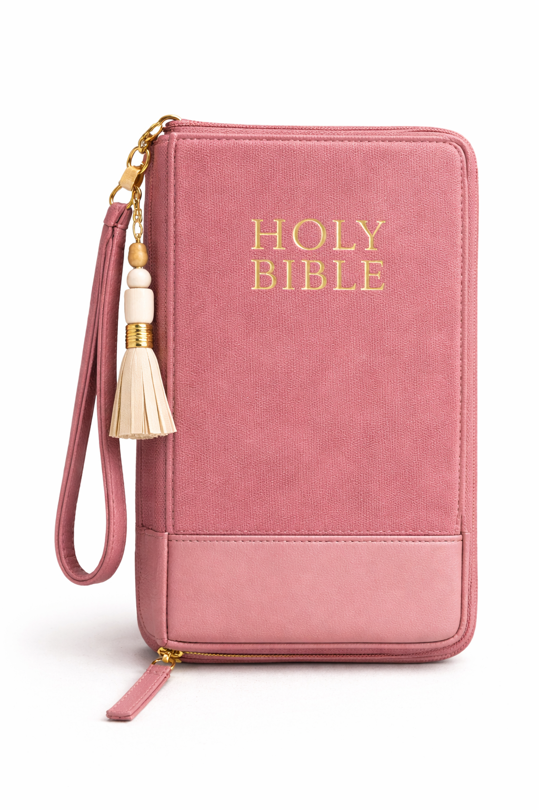

YEIRN • ATELIER EN COURS
CREER, ÉCOUTER, S’ANCRER
YEIRN propose des ateliers de louange créative, des espaces sensibles pour écrire, créer, écouter et accueillir ce qui émerge à travers la parole.
Pensé comme un espace de pause, de transformation et d’expression, YEIRN réunit plusieurs dimensions : les ateliers, les kits créatifs, les événements, une galerie communautaire et un accompagnement humain à travers le contact et les demandes de devis.
L’ATELIER À NE PAS MANQUER
Priorité actuelleATELIER DE LOUANGE CRÉATIVE
Un temps de parole, d’écriture et de création
Un atelier guidé pour ralentir, écouter, créer et repartir avec une trace concrète du temps vécu. Accessible à tous, même sans pratique artistique préalable.
Je réserve ma placeL’UNIVERS YEIRN
4 axes principauxATELIERS
Des espaces guidés par la parole
Des temps de création, d’écoute et d’ancrage pensés pour accompagner un cheminement personnel et spirituel.
Voir les ateliersKITS
Des supports créatifs à découvrir
Une sélection de kits et créations YEIRN pour prolonger l’expérience chez soi ou offrir un support d’expression.
Découvrir les kitsGALERIE
Une dimension plus communautaire
Un espace pour découvrir les œuvres proposées par les artistes et validées avant publication.
Voir la galerieCONTACT & DEVIS
Échanger autour d’un besoin ou d’un projet
Une question, une collaboration, une demande de devis ou un besoin d’information ? Un formulaire dédié est disponible.
Contacter YEIRNÉVÉNEMENTS & FLOW WORSHIP
À venirÉVÉNEMENTS
Une extension vivante de l’univers YEIRN
Les événements Flow Worship prolongent cette vision dans des temps plus collectifs, libres et incarnés. Cette section accueillera prochainement les prochaines dates et informations.
PARTICIPER À LA GALERIE
Soumission modéréePROPOSER UNE ŒUVRE
Partager une création
Les artistes peuvent proposer leurs œuvres accompagnées d’une description obligatoire. Chaque proposition est relue avant publication.
Proposer une œuvreDÉLAI DE VALIDATION
Publication sous 24 à 48h
Les œuvres ne sont pas publiées automatiquement. Cela permet à YEIRN de garder une galerie cohérente, respectueuse et qualitative.
Découvrir la galerieACCÈS RAPIDE
Instagram & mobileLIEN EN BIO
Retrouver tous les liens importants en un clic
Une page simple pensée pour Instagram afin d’accéder rapidement aux ateliers, à la galerie, aux kits et au contact.
Ouvrir la page liensPRÊT(E) À COMMENCER ?
Réserve ta place ou écris-nous
Tu peux t’inscrire à l’atelier, proposer une œuvre, découvrir les kits ou envoyer une demande via le formulaire de contact.